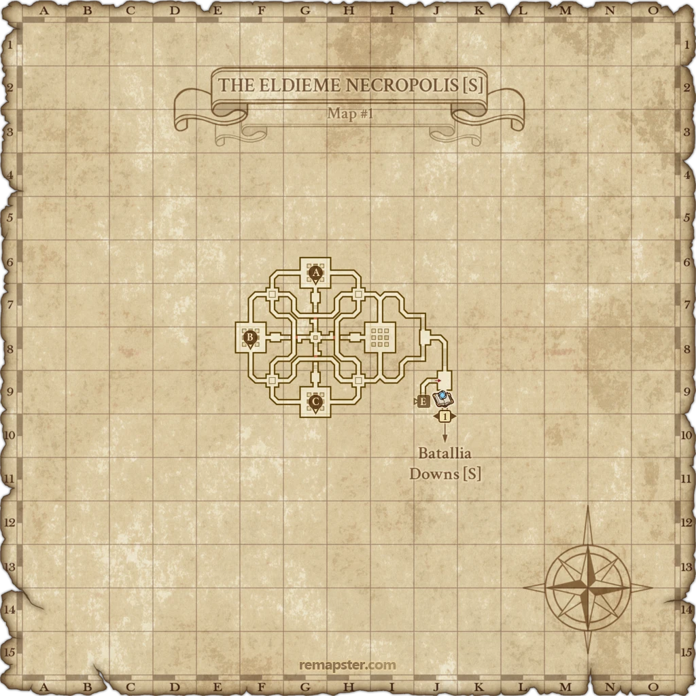
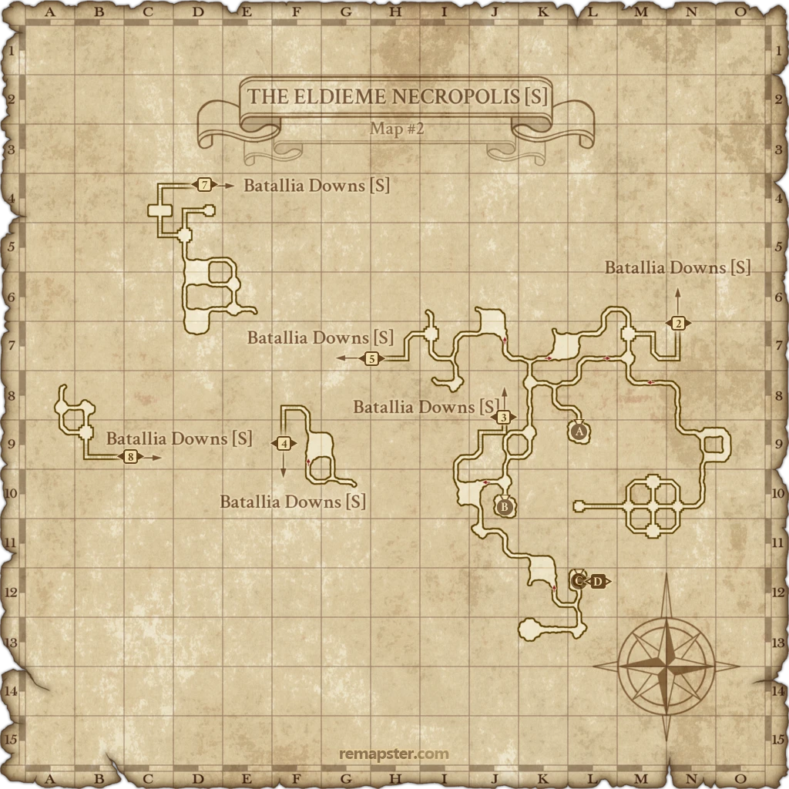
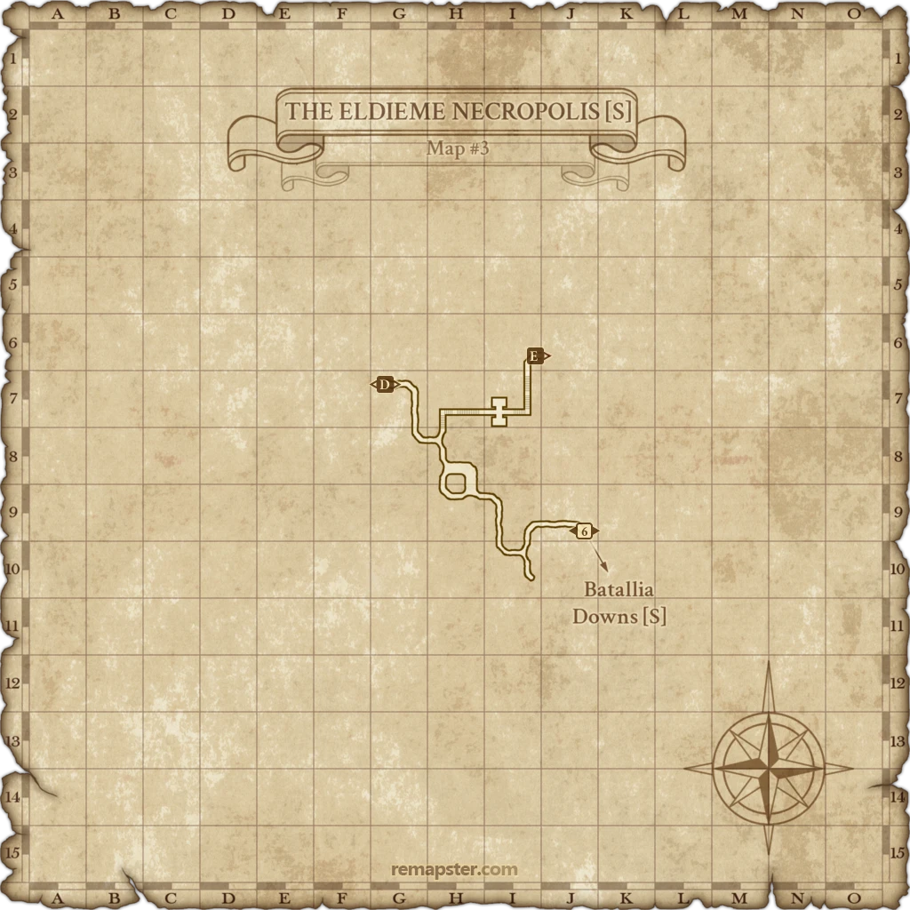

Before you begin
- Reach the past through the opening Wings of the Goddess missions.
- For a first Campaign enlistment, obtain the Blue Recommendation Letter from Turbulent Storm in The Eldieme Necropolis [S].
Starting point
Adelbrecht · Bastok Markets [S] · E-8
Walkthrough
- Speak with Turbulent Storm at J-9 in The Eldieme Necropolis [S] and accept the Blue Recommendation Letter. The Batallia Downs [S] J-10 entrance reaches this section.
- Travel to Bastok Markets [S] and speak to Adelbrecht near the Auction House at E-8. Accept enlistment and receive the Battle Rations key item.
- Leave for North Gustaberg [S]. Enter Zegham Hill’s ascending path near I-8 and follow its ramps to Gebhardt at the Eduard Watchtower, I-6. Speak to him to deliver the rations.
- Speak to Roderich at E-11 in North Gustaberg [S]. Then examine the Barricade at E-7 in the same zone.
- Return to Adelbrecht in Bastok Markets [S] to finish and join Bastok’s Campaign army.
Battle and progress notes
- This is the Bastok enlistment quest, numbered B-00 here; it precedes the twelve story quests.
- The first Campaign enlistment grants Sprinter’s Shoes and the Bronze Ribbon of Service. Joining another Campaign nation later is a separate allegiance decision.
- The source has unfinished checks around existing Campaign allegiance. The guide is written for a first enlistment; it does not confirm switching rules.
Completion and reward
Fourth Division Soldier title; Bastok Campaign allegiance. First enlistment also grants Sprinter’s Shoes and Bronze Ribbon of Service.
What this opens
- B-01: Better Part of Valor
- Bastok Campaign services
Area maps
Open a zone below, then select a map to enlarge it. Match the named floors and grid coordinates in the steps; these are reference area maps, not a live position tracker.
The Eldieme Necropolis (S)









Batallia Downs (S)


Bastok Markets (S)


North Gustaberg (S)

Zone guides
References
Steps are an original summary of the linked walkthrough and reviewed source. Other servers’ bonus rewards are not included. How to read requirements, waits and battlefield notes.